不分類型獎項
7 個獎項最佳專輯獎
 得獎
得獎得獎QUIT QUIETLY
落日飛車 Sunset Rollercoaster
製作名單
製作人：王昱辰、曾國宏

Live Without Irony
陳穎達四重奏
製作名單
製作人：陳穎達

((No wool. No hump))
羊駝小姐
製作名單
製作人：羊駝小姐
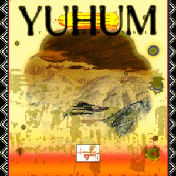
YUHUM
2CHANGE
製作名單
製作人：黃昱、林佳妤、顏豪
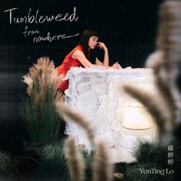
Tumbleweed from nowhere
羅妍婷
製作名單
製作人：羅妍婷
最佳樂團獎
QUIT QUIETLY
落日飛車 Sunset Rollercoaster

臺北人文地景
COLD DEW
 得獎
得獎得獎Masonolay i Cepo’
漂流出口
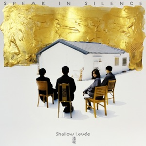
沈默的鉅作
淺堤 Shallow Levée
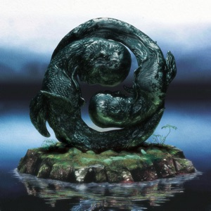
明日音
Mong Tong
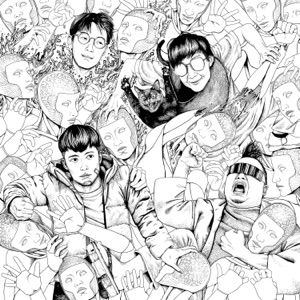
Override!
Robot Swing
最佳創作歌手獎
QUIT QUIETLY
曾國宏
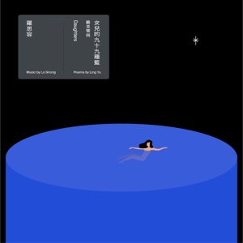
女兒的九十九種藍——聽見零雨
羅思容
((No wool. No hump))
羊駝小姐
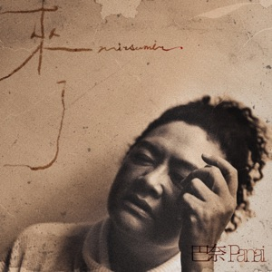
來了
巴奈
- 得獎
得獎Tumbleweed from nowhere
羅妍婷
最佳新人獎
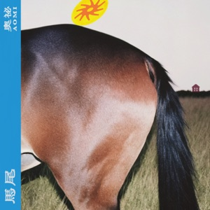
奧祕
馬尾
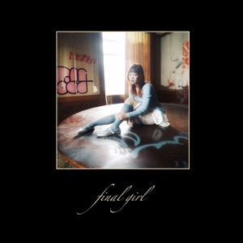
Final Girl
ana
((No wool. No hump))
羊駝小姐
 得獎
得獎得獎Puffer Bone
debloop

ALIVE
高真 TRU
最佳樂手獎
Live Without Irony
陳穎達
樂器：吉他
製作名單
樂器：吉他
- 得獎
得獎Live Without Irony
林偉中
樂器：鼓組
製作名單
樂器：鼓組

Over The Moons
蘇郁涵
樂器：鐵琴
製作名單
樂器：鐵琴
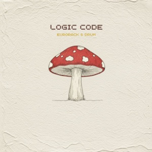
Logic Code Eurorack & Drum
王品心
樂器：模組合成器
製作名單
樂器：模組合成器
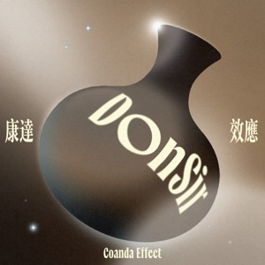
康達效應 Coanda Effect
葉俊麟
樂器：電貝斯、低音大提琴、打擊、大提琴、合成器
製作名單
樂器：電貝斯、低音大提琴、打擊、大提琴、合成器
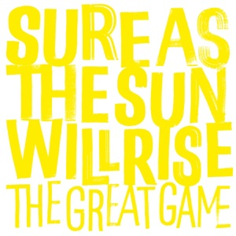
得獎得獎Sure As The Sun Will Rise
Brandon Lin
樂器：電貝斯，長號
製作名單
樂器：電貝斯，長號
Override!
洪惟農
樂器：吉他
製作名單
樂器：吉他
 得獎
得獎得獎氣孔生成維度
鄭宇泰
樂器：長笛
製作名單
樂器：長笛
最佳現場演出獎
《流水席》發行場：家宴
Flowstrong
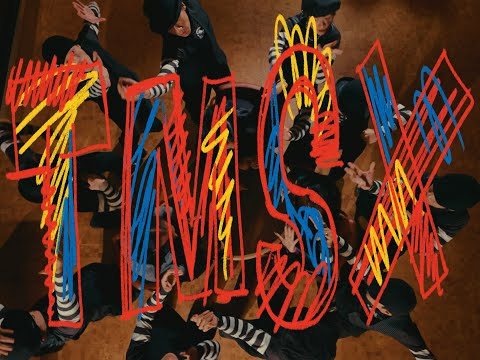
得獎得獎TMSX : 10 Years of Shhh
That's My Shhh
Open Culture Foundation presents Mong Tong x XTRUX Sun Moon Darkness 明日音 Live at SUB
Mong Tong
2026 大港開唱｜Gummy B X 陳嫺靜
Gummy B X 陳嫺靜

聲子蟲《THE CURE》專場
聲子蟲
HUR＋ 九人九色專場演唱會《 9 of 9 ：ARCANA CONCERT》
C.Holly
亞洲創作音樂獎
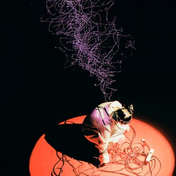
得獎得獎Ore
ena mori
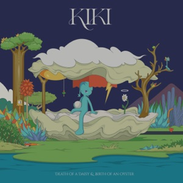
Death of a Daisy & Birth of an Oyster
KIKI
Melting PT.
SHNTI
DON’T LIKE 我鍾意
N.Y.P.D. 南洋派對
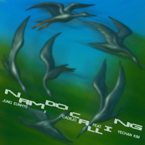
NAMDO CALLING
NAMDO CALLING (Jung Eunhye, CADEJO, Yechan Kim)
類型音樂獎項
14 個獎項最佳搖滾專輯獎
Masonolay i Cepo’
漂流出口

在這裡停一下
deca joins

最後一舞
潑猴

忘形
魚條
 得獎
得獎得獎七日譚 Heptaméron
Acid Brain 酸腦
最佳搖滾歌曲獎
 得獎
得獎得獎自種自收
楊世暄

深夜的巴士會開往哪裡
老王樂隊
爛人指引
魚條
Robot Revolution
Robot Swing
解
共振效應
最佳民謠專輯獎
Alang mu Kbayang 母親的古白楊
一好･屴夯

Kami Kami 我們我們
查勞．巴西瓦里
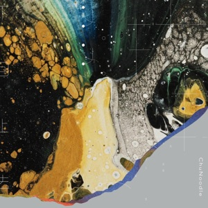
下回上去
春麵樂隊
- 得獎
得獎來了
巴奈

春子
雷擎
最佳民謠歌曲獎
Alang mu Kbayang 母親的古白楊
一好･屴夯
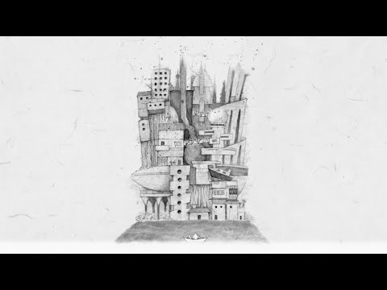
三菜一湯
楊世暄

Hollywood Dream
凹與山 Our Shame
- 得獎
得獎是誰
巴奈

鏡仔
邱舒
最佳嘻哈專輯獎
Off the Chain
Lizi 栗子

少年殺人事件
蘇裔非
- 得獎
得獎YUHUM
2CHANGE
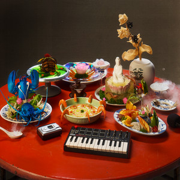
流水席
Flowstrong
失而復得
DCIV(柯德維)
最佳嘻哈歌曲獎
VISION
方品融

b.ye 畢業
Miss Ko 葛仲珊
給我兒子們的信
DCIV(柯德維)

別鬧
CED
 得獎
得獎得獎520
熊仔
最佳電音專輯獎

Gazing the Shades of White (The Remixes)
Cicada
- 得獎
得獎Logic Code Eurorack & Drum
王品心
製作名單
共同創作人：葉庭均

umop ap!sdn
undep
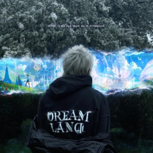
If this is the end, meet me in Dreamland.
PROD_CW
最佳電音歌曲獎
菇
王品心
製作名單
共同創作人：葉庭均
ǝuo
undep
MUSIC SAVED MY LIFE SO DID YOU 我是電子音樂
PROD_CW
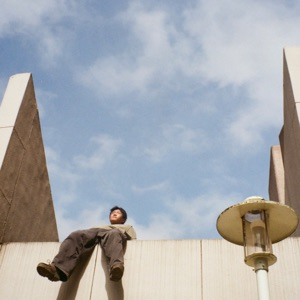
得獎得獎Balls Hit the Floor
yyt

B.A.S.I.C
A. FLYT
最佳爵士專輯獎
Live Without Irony
陳穎達四重奏
- 得獎
得獎Over The Moons
蘇郁涵
Tumbleweed from nowhere
羅妍婷
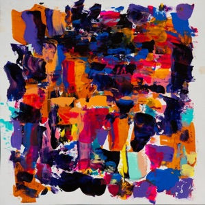
raymond.
TeacheRay
Sure As The Sun Will Rise
Falk Bonitz Rafique
最佳爵士歌曲獎
Prioritization Suite - 2. 金錢
陳穎達四重奏
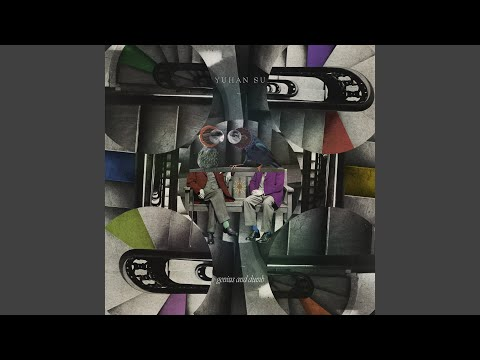
得獎得獎天才與笨蛋
蘇郁涵

厭世調
楊易修
On Your Side
羅妍婷
Ad Astra
Falk Bonitz Rafique
最佳節奏藍調專輯獎
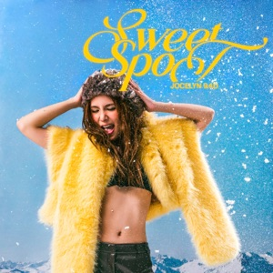
Sweet Spot
Jocelyn 9.4.0
- 得獎
得獎((No wool. No hump))
羊駝小姐

雙魚宮
ERIKA 劉艾立

Friendly Singing Neighbor
BRADD

Enough
Dac & 鄭昭元 ZAOYUAN
最佳節奏藍調歌曲獎
 得獎
得獎得獎These Days
雲端司機
Unlock Your Soul
羊駝小姐
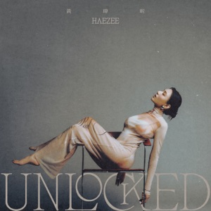
TWO BROKEN SOULS
Haezee 黃瑋昕
Pink & Purple
BRADD
Home
Dac & 鄭昭元 ZAOYUAN
最佳另類流行專輯獎
QUIT QUIETLY
落日飛車 Sunset Rollercoaster
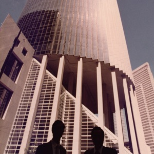
得獎得獎1997
雲端司機
野臺語言
楊易修
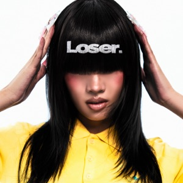
Loser.
Karencici

讓我想起
NIO
最佳另類流行歌曲獎
Bluebird
落日飛車 Sunset Rollercoaster
Awake
羊駝小姐
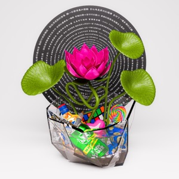
得獎得獎和大安區蘇格拉底打羽球 feat.阿橘Ahhg
鐘奕安
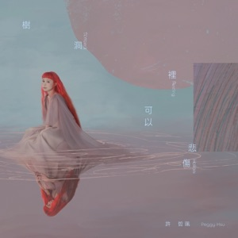
與世隔絕的怪物
許哲珮

指仙
A_Root同根生
評審團獎
1 個獎項評審團獎
- 得獎
得獎Over The Moons
蘇郁涵
找不到符合的入圍作品，換個關鍵字試試。